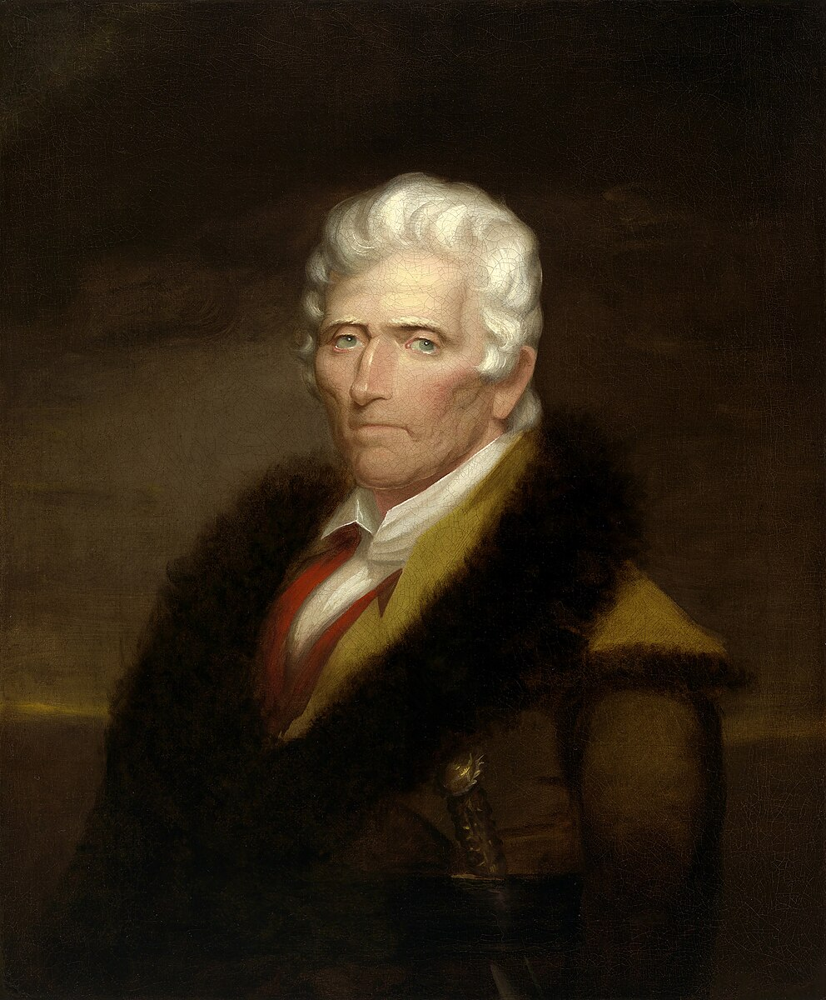

DANIEL BOONE
"The Pathfinder of the American Frontier"

- WHO: American pioneer, explorer, woodsman, and folk hero who blazed trails through the wilderness.
- WHAT: Famous for exploring and settling Kentucky, creating the Wilderness Road through the Cumberland Gap.
- WHERE: Born in Pennsylvania (1734), explored Kentucky, North Carolina, and Missouri.
- WHEN: 1734-1820 (86 years). Blazed the Wilderness Road in 1775.
- WHY FAMOUS: Opened the American frontier to westward expansion, symbolizing the pioneer spirit and American courage.